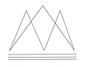

Om oss
"KalmarDelgivningscenter är ett auktoriserat delgivningsföretag som
grundades under 2019 och utför stämningsmannadelgivningar samt andra
kundspecifika uppdrag.
Våra anställda är förordnade Stämningsmän och genomgår
fortlöpande utbildningar som motsvarar rikspolisens utbildningskrav.
På så sätt säkerställer vi att de alltid med högsta sekretess uppträder
kompetent, korrekt och diskret,
vilket är en trygghet för våra
uppdragsgivare."
Våra tjänster

Personlig delgivning
försändelsen lämnas till den söktepersonligen.
Surrogatdelgivning
försändelsen skall om möjligt lämnastill den sökte personligen. Om denne
inte anträffas får försändelsen lämnas
till annan.
Surrogatdelgivning av stämning i tvistemål
försändelsen skall om möjligt lämnas till den sökte personligen. Om denne
inte anträffas får försändelsen lämnas
till annan endast om det finns
anledning anta att den sökte avvikit
eller håller sig undan.
Delgivning med juridisk person
försändelsen skall lämnas till någonsom har rätt att ta emot
delgivningsförsändelser.
Behörig att ta emot delgivning är den
som utsetts att företräda den juridiska
personen eller om flera företrädare
finns till någon av dem.
Kungörelsedelgivning
saknar person som söks för delgivningbostad och man inte kan fastställa var
han befinner sig kan delgivning ske
genom kungörelse.
Spikning
försändelsen delges genom atthandlingen i slutet kuvert lämnas i den
söktes hemvist eller, om så inte
kan ske, fästas på dörren till bostaden
enligt s.k spikning.

Skräddarsy ditt uppdrag
från utbildning och föredrag tillkundspecifika uppdrag enligt behov
och önskemål